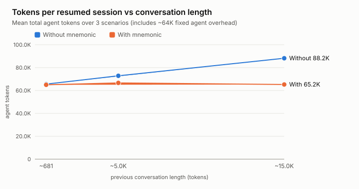
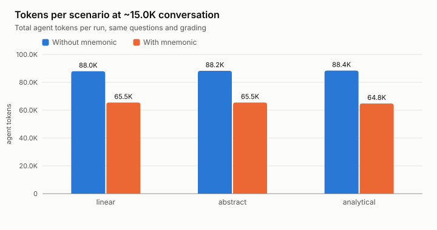
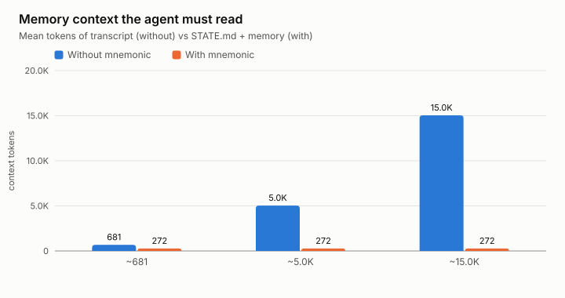

Resuming a project from a previous conversation, with and without mnemonic. 3 scenarios (linear, abstract, analytical), 3 conversation lengths, small model subagents, automatic grading.

Savings by conversation length: ~681: 1%, ~5.0K: 9%, ~15.0K: 26%. Without memory the cost grows with the conversation; with mnemonic it stays flat because STATE.md does not grow.


| length | scenario | memory | correct | context | agent tokens | tools |
|---|---|---|---|---|---|---|
| 1k | s1-linear | without | 5/5 | 906 | 65,499 | 5 |
| 1k | s1-linear | with | 5/5 | 335 | 65,234 | 7 |
| 1k | s2-abstract | without | 6/6 | 625 | 66,115 | 6 |
| 1k | s2-abstract | with | 6/6 | 283 | 65,104 | 7 |
| 1k | s3-analytical | without | 5/5 | 511 | 65,207 | 5 |
| 1k | s3-analytical | with | 5/5 | 199 | 64,657 | 5 |
| 5k | s1-linear | without | 5/5 | 5,013 | 72,921 | 6 |
| 5k | s1-linear | with | 5/5 | 335 | 65,232 | 7 |
| 5k | s2-abstract | without | 6/6 | 5,042 | 72,701 | 5 |
| 5k | s2-abstract | with | 6/6 | 283 | 69,817 | 8 |
| 5k | s3-analytical | without | 5/5 | 5,038 | 73,007 | 5 |
| 5k | s3-analytical | with | 5/5 | 199 | 64,955 | 5 |
| 15k | s1-linear | without | 5/5 | 15,019 | 87,975 | 5 |
| 15k | s1-linear | with | 5/5 | 335 | 65,472 | 8 |
| 15k | s2-abstract | without | 6/6 | 15,048 | 88,249 | 5 |
| 15k | s2-abstract | with | 6/6 | 283 | 65,477 | 7 |
| 15k | s3-analytical | without | 5/5 | 15,044 | 88,420 | 5 |
| 15k | s3-analytical | with | 5/5 | 199 | 64,790 | 5 |
| 5k-failed | s2-abstract | with | 0/6 | 283 | 64,076 | 4 |